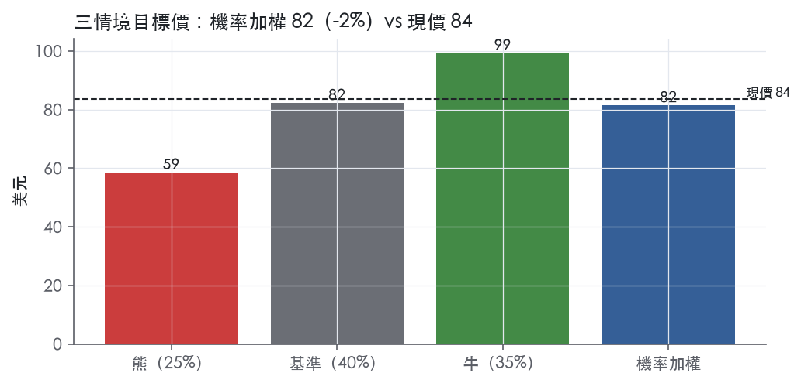
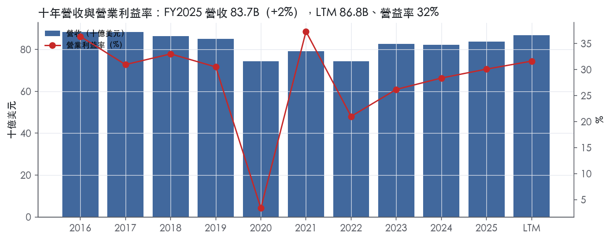
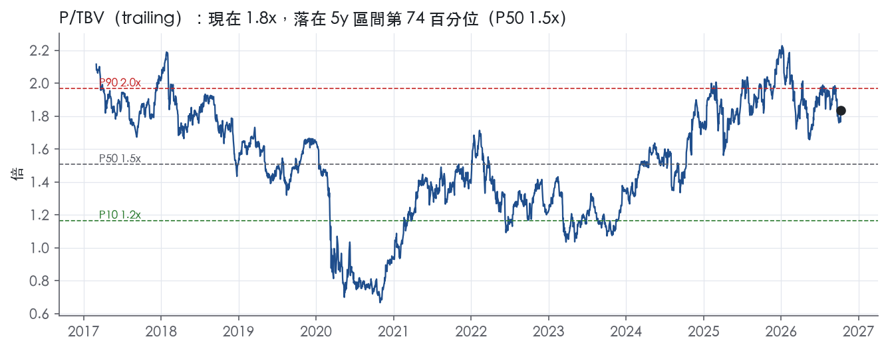
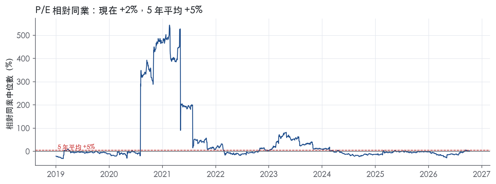
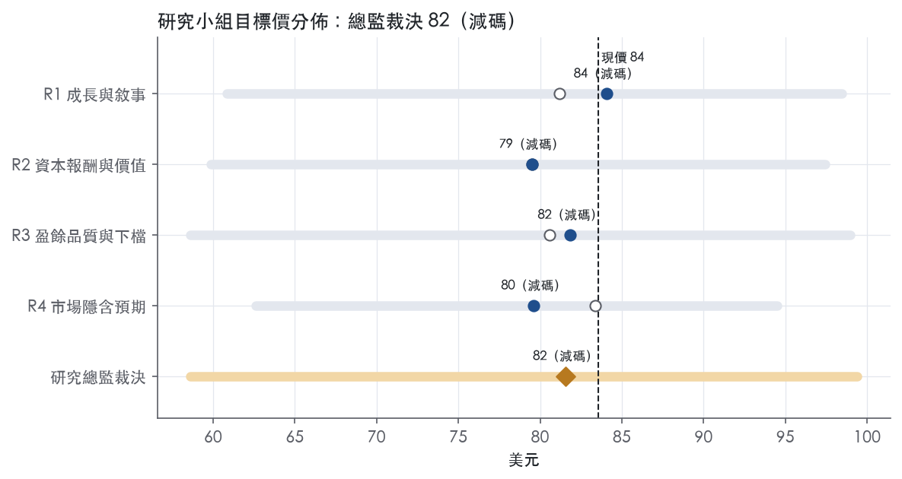
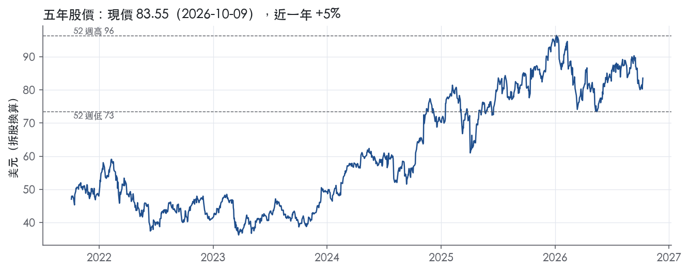

評等總表 › 金融 › WFC
ROTCE高點已入價，相對減碼｜評等 減碼｜目標價 82
| 評等 | 減碼 |
| 12 個月目標價 | 82 美元 |
| 現價 | 83.55 美元（2026-10-09） |
| 預期報酬 | 股價 -2.4%＋股息 2.2%＝總報酬 -0.2%；同業籃門檻 10.2%，超額 -10.4% |
| 估值方法 | P/TBV 1.7x，套在一年後的有形淨值 |
| 三情境 | 熊 59／基準 82／牛 99 |
| 研究流程 | 四位研究員兩輪辯論＋研究總監裁決 |
| 資料來源 | SEC EDGAR XBRL、Tiingo、FRED（全免費） |
ROTCE高點已入價，相對減碼（研究總監裁決，四位研究員兩輪辯論後）
評等 減碼｜12 個月目標價 82 美元（總監三情境機率加權 82 與研究員中位數 81 各半）｜現價 83.55（2026-10-09）
預期報酬：股價 -2.4%＋股息 2.2%＝總報酬 -0.2%。同業籃門檻 10.2%，超額 -10.4%。
估值方法：P/TBV 1.7x，套在一年後的有形淨值。三情境：熊 59（25%）／基準 82（40%）／牛 99（35%）。
什麼會讓研究總監改變看法：FY2026Q3、Q4 公布 ROTCE 扣 notable items 後仍 ≥17.5% 且 ROA 連兩季 ≥1.25%、CET1 不低於 10.3%，代表報酬來自資產而非槓桿，倍數回 1.8x、轉中性；反之淨沖銷率連兩季上升破 0.60% 且備抵／放款續降，熊機率上調、倍數降到 1.5x。
| 過去四季（實際，FY2026Q2） | 未來四季 | 第 5–8 季 | 第 9–12 季 | |
|---|---|---|---|---|
| 淨營收（B） | 86.8B | 92.4B | 97.1B | 101.4B |
| 淨營收成長 | 6.2% | 6.5% | 5.0% | 4.5% |
| 稅前利益率 | 31.6% | 32.0% | 31.5% | 31.5% |
| EPS（美元） | 6.91 | 8.44 | 9.09 | 9.90 |
| EPS 成長 | 17.7% | 22.1% | 7.7% | 8.9% |
| 每股股息（美元） | 1.80 | 1.80 | 1.80 | 1.80 |
| ROTCE | 16.2% | 17.5% | 17.9% | 18.4% |
| 每股有形淨值（美元） | 46.19 | 48.44 | 51.10 | 54.32 |
| P/E（現價） | 12.1x | 9.9x | 9.2x | 8.4x |
| P/TBV（現價） | 1.8x | 1.7x | 1.6x | 1.5x |
| 股息殖利率（現價） | 2.2% | 2.2% | 2.2% | 2.2% |
過去四季為申報數字；預測為研究總監的假設、程式計算。倍數與殖利率都用現價計算，用來看現價對應各期獲利的高低。
| 情境 | 機率（歷史） | 故事 | 未來四季營收成長 | 第 5–8 季稅前利益率 | 倍數 | 目標價 | 股價漲跌 |
|---|---|---|---|---|---|---|---|
| 熊 | 25%（24%） | 風險表第1條信用週期反轉（提列由每季914M倍增、效率比回68.9%）疊加第2條NIM由2.43%續降與第3條CET1限制回購停止，倍數回3年P10 | 1.0% | 23.0% | 1.3x | 59 | -29.8% |
| 基準 | 40%（42%） | 擴表持續但換算率下降，效率改善被備抵重建抵銷，一次性項目退去，ROTCE落在16.5–17%，市場以已付的1.7x付NTM有形淨值 | 6.5% | 31.5% | 1.7x | 82 | -1.4% |
| 牛 | 35%（34%） | 陡峭曲線（10年債5.22%對2年債4.75%、聯邦基金3.75%）壓低存款成本、推升固定利率資產重定價，NIM止跌、擴表轉成NII，ROTCE站穩18%，資本規則定案後回購回到基準力道，倍數到5年P90 | 9.0% | 34.0% | 2.0x | 99 | 19.0% |
目標價由程式依研究總監的驅動與倍數計算；機率由研究總監給定。括號內是歷史頻率：把這檔股票過去十年 12 個月報酬的波動形狀，置中在基準情境，結果落在各情境附近的比例。

四位研究員用不同方法各自估值，回應研究總監的質疑後交出第二輪，最後由總監逐點裁決。各研究員的主張見第七章，裁決理由見第八章，完整論證見《研究底稿》。
| 立場（一輪→二輪） | 加權目標價（一輪→二輪） | 評等（一輪→二輪） | 第二輪倍數 | 熊～牛目標價 | |
|---|---|---|---|---|---|
| R1 成長與敘事 | 中性→中性 | 81→84 | 減碼→減碼 | 1.8x | 61～98 |
| R2 資本報酬與價值 | 看空→看空 | 80→79 | 減碼→減碼 | 1.6x | 60～97 |
| R3 盈餘品質與下檔 | 中性→看空 | 81→82 | 減碼→減碼 | 1.7x | 59～99 |
| R4 市場隱含預期 | 看空→看空 | 83→80 | 減碼→減碼 | 1.6x | 63～94 |
| 研究總監裁決 | 看空 | 82 | 減碼 | 1.7x | 59～99 |
目標價由程式依各自的驅動與倍數計算；評等＝機率加權總報酬 − 同業籃門檻。
Wells Fargo 是一家以零售與商業銀行為核心、橫跨消費金融、商業銀行、投資銀行與財富管理四大業務的全能銀行（universal bank）。公司是一家依特拉華州法律組織的金融控股公司，主要業務是作為旗下子公司的控股公司¹。截至2025年12月31日，公司資產約為2,100B美元、放款986.2B美元、存款約1,400B美元、股東權益181.1B美元，以資產規模計是美國第四大銀行控股公司¹。主要子公司 Wells Fargo Bank, N.A. 資產為1,800B美元，占公司總資產85%¹。公司提供多元化的銀行、投資與房貸產品與服務，以及消費與商業金融，客群主要是美國境內、也包括美國境外國家的個人、企業與機構¹。消費端產品涵蓋支票與儲蓄帳戶、信用卡與金融卡，以及房屋、汽車、個人與小企業貸款¹，另提供個人化財富管理、經紀、財務規劃、放款、私人銀行及信託服務¹。企業端則透過企業銀行、投資銀行、資金管理、商業不動產放款與服務、股權與固定收益解決方案以及銷售、交易與研究能力，服務私營、家族企業及公開公司、政府與機構客戶¹。從 LTM 數字看，公司營收規模86.80B美元、EBITDA 29.12B美元，屬於大型多元化銀行的體量。
公司自2025年底起有四個可報導經營分部：消費銀行與放款（Consumer Banking and Lending）、商業銀行（Commercial Banking）、企業與投資銀行（Corporate and Investment Banking）、財富與投資管理（Wealth and Investment Management）¹。消費銀行與放款提供多元化的消費者與小企業金融產品與服務，包括支票與儲蓄帳戶、信用卡與金融卡，以及房屋、汽車、個人與小企業放款，並透過分行通路提供財富管理與財務規劃服務²。以2026年第一季為例，該分部下的消費、小企業銀行子業務淨利1,941M美元，放款平均餘額335.3B美元、存款平均餘額816.6B美元²；其中信用卡子業務淨利1,595M美元、房貸1,787M美元(原文列787M，誤）需以原文為準——信用卡淨利1,595M美元、房屋貸款淨利787M美元、汽車287M→實際295M美元、個人貸款302M美元²。四個分部在2026年第二季的平均放款分別為：消費銀行與放款337.8B美元、商業銀行237.1B美元、企業與投資銀行359.4B美元、財富與投資管理91.1B美元；平均存款分別為828.4B美元、189.5B美元、234.8B美元、109.8B美元³。從放款規模看，企業與投資銀行與消費銀行與放款是兩大支柱分部，商業銀行與財富管理規模較小但成長快。各分部對集團總營收的精確占比，10-K未揭露。公司在財富與投資管理的客戶資產規模於2026年第二季超過2,400B美元，年增15%³，顯示該分部正朝資產管理規模驅動的費用收入成長。
公司主要服務美國境內個人、企業與機構客戶，同時在美國境外部分國家營運¹。通路包括分行、數位銀行、經紀與投資顧問網路，以及企業與投資銀行的直接客戶關係。截至2025年底，公司約有205,000名在職員工，約76%在美國¹。公司子公司面對銀行、儲貸機構、信用合作社、融資公司、房貸銀行公司、保險公司、投資銀行、投資顧問公司與共同基金公司的競爭，也面臨來自投資管理機構、券商、私募股權與私募信貸機構及金融科技公司的競爭加劇¹。數位資產與替代支付方式（如加密貨幣、穩定幣與代幣）以及分散式帳本的支付清算結算流程，有可能降低對傳統存款機構的依賴，進而影響銀行存款與競爭格局¹。公司作為金融控股公司（FHC）身分使其可以併購從事金融活動的公司，若主要子銀行在社區再投資法（CRA）評等低於滿意，將被限制從事新金融活動或併購¹。
過去四季營收與淨利呈持續擴張趨勢，核心驅動是淨利息收入與淨利息收入外的手續費收入同步成長。FY2025Q3營收21.44B美元、年增5.3%，EPS 1.66。FY2025Q4營收21.29B美元、年增4.5%，淨利5.36B美元，EPS 1.65；當季效率比64.5%、ROTCE 15.4%。FY2026Q1營收21.45B美元，年增6%，淨利5.3B美元，每股配息2.00美元（原文誤，應為EPS 1.60）²；淨利息收入年增5%，手續費收入年增8%，淨放款沖銷率穩定在45個基點²；當季回購股票46.3百萬股、合計4.0B美元²。FY2026Q2淨利6.4B美元、每股盈餘2.00美元，年增25%³；總營收22.622B美元、年增9%，淨利息收入年增5%、非利息收入年增13%³；當季回購普通股3,740萬股、合計3.0B美元³；公司預告第三季普通股股息將由每股0.45美元上調11%至0.50美元³。CEO Charlie Scharf在第二季新聞稿中指出，消費與商業信用品質在所有組合中維持強勁，淨放款沖銷率較去年同期下降10個基點³；ROTCE由去年同期的15.2%升至本季17.7%、上半年16.1%³。平均放款年增12%，平均存款年增10%，消費與商業業務餘額同步成長³。
公司管理層將成長引擎歸因於過去數年對業務的持續投資，帶動各分部廣泛的營收成長²。Scharf表示，消費銀行與放款營收成長7%、商業銀行成長7%，企業與投資銀行中銀行業務營收成長11%、市場業務成長19%，財富與投資管理成長14%²；公司在信用卡業務於第一季推出兩款新卡，過去五年的產品優化帶動更高的刷卡手續費與消費金額²。進入第二季，管理層強調所有經營分部營收均呈現強勁成長，消費銀行與放款成長6%、財富與投資管理成長13%、商業銀行成長6%、企業與投資銀行成長16%³；財富與投資管理的客戶資產年增15%至逾2,400B美元，商業銀行招募的新人才推動新客戶獲取與放款、存款餘額成長，企業與投資銀行的銀行業務營收成長20%、市場業務成長24%³。Scharf特別提到，公司終於擺脫了多年因資產成長上限（consent order）而無法與同業公平競爭的局面，正謹慎地透過資本配置支持客戶成長，並持續對股東進行資本回饋，同時維持顯著高於監管最低要求的資本緩衝³。公司亦提及對新資本規則定案的期待，以及消費者與企業財務狀況持續強勁，但對通膨與可負擔性存在隱憂³。整體而言，Wells Fargo 的成長敘事建立在「監管枷鎖解除後的資產負債表再擴張」與「手續費收入多元化（財富管理、投資銀行）」雙軸上，而非單純依賴淨利差擴張。考慮到效率比已降至60%附近、ROTCE升破17%，公司的營運槓桿正在顯現。惟10-K未揭露各分部對總營收的精確貢獻比重，後續須持續追蹤分部別揭露以驗證成長引擎的結構是否平衡。

WFC 的護城河評為「窄」，趨勢「穩定」。我們有把握未來 5 年以上 ROE 仍高於資本成本，但十年數據波動大，監管整改也還沒走完，撐不起 10 年以上的把握。優勢來自三處：存款與資金管理帳戶的轉換成本、全國前四大規模帶來的資金與費用攤提優勢，以及銀行執照與系統重要性監管構成的門檻。
轉換成本：這是 WFC 最主要的優勢來源。消費端產品涵蓋支票與儲蓄帳戶、信用卡與金融卡，以及房屋、汽車、個人與小企業貸款¹。企業端提供跨產業的銀行與信用產品、擔保放款與租賃產品，以及資金管理（treasury management）¹。支票帳戶綁著薪轉與自動扣款，資金管理綁著企業收付款流程，客戶搬家的作業成本遠高於換行能拿到的利率差，存款因此有黏性。
成本優勢：這項優勢來自規模。截至 2025 年 12 月 31 日，公司放款 986.2B 美元、股東權益 181.1B 美元，以資產計是美國第四大銀行控股公司¹。規模讓科技、合規與分行的固定成本攤在更大的資產負債表上，零售存款也提供比批發融資便宜的資金。這項優勢只對中型與區域銀行成立，對資產規模更大的同業並不成立。
無形資產（執照）：公司是依 BHC Act 註冊的金融控股公司與銀行控股公司¹。大型 BHC 必須遵守風險資本、槓桿、流動性、壓力測試，以及最低股權加無擔保長債（TLAC）等要求¹。全國性的受保存款網路加上這套合規體系，新進者難以複製。不過這道門檻由所有大型銀行共享，不是 WFC 獨有。
品牌不列為優勢來源。2018 年 2 月 2 日公司與 FRB 簽署同意令，要求董事會加強治理監督、公司改善法遵與作業風險管理¹。在這個背景下，找不到品牌溢價的證據。網路效應與效率規模也沒有具體證據，不列入。
數字只能部分支持我們的主張：撐得起「窄」，撐不起「寬」。ROE 最新 11.8%、十年平均 9.6%、標準差 3.0%；資本成本代理值 10.2%，十年平均減資本成本為 -0.6%。這組數字與「ROE 長期高於資本成本」的主張衝突。
我們仍維持「窄」，理由有三。第一，ROE 有資料的 9 年中，有 7 年高於資本成本。拉低平均的主要是 FY2020，當年淨利只有 3.38B 美元，屬於疫情年的一次性提列衝擊。第二，代理值是用今天的 10 年債殖利率 5.22%加 5% 算出來，再套到過去十年。過去多數年份的利率比現在低，這個方法會高估歷史門檻。第三，近期報酬率明顯改善：ROTCE 從 14.2%升到 18.3%，效率比從 68.9%降到 60.4%。
利潤率不穩定，是不給「寬」的主因。稅前利益率十年平均 27.7%、標準差 9.3%，區間從 3.4% 到 37.3%。淨營收十年平均成長 -0.4%，反映 2018 年同意令設下的資產成長上限。FRB 已於 2025 年 6 月 3 日解除這項資產成長上限，但同意令其餘條款仍然有效¹。另外，淨利息收入占平均總資產比率從 2.5%降到 2.2%，存款定價力並沒有隨規模擴大而增強。
最直接的威脅是開放銀行規則壓低轉換成本。CFPB 在 2024 年 10 月依 Dodd-Frank 第 1033 條發布規則，要求金融業者依消費者請求，把資料提供給消費者及其授權的第三方，此規則可能導致詐欺、資料濫用增加，並加劇競爭¹。2025 年 10 月，聯邦法院在 CFPB 重新評估期間暫緩了該規則的合規期限¹。這項規則一旦落地，帳戶搬家變容易，會直接削弱我們列出的第一項優勢。
第二是非銀行競爭者與數位資產。許多競爭者受到的監管限制較少，部分成本結構也可能較低¹。加密貨幣、穩定幣、代幣與分散式帳本的支付清算結算流程，可能降低市場對傳統存款機構的依賴，導致銀行存款減少¹。
第三是監管與規模天花板。2024 年 9 月 12 日，Wells Fargo Bank, N.A. 與 OCC 簽署正式協議，須加強反洗錢與制裁風險管理¹。BHC 不得控制全國受保存款機構存款總額超過 10%¹。這條上限讓 WFC 難以靠併購繼續擴大成本優勢。
目標倍數相對同業應持平，不給溢價。窄護城河撐得起 5 年以上 ROE 高於資本成本，但十年平均 ROE 9.6% 低於 10.2% 的代理值，利潤率波動也大，沒有溢價的理由。P/TBV 目前 1.8x，已高於五年中位數 1.5x、位於五年分位 74.3%，估值上行應來自 ROTCE 兌現，而不是倍數重評。
| 指標 | 最新 | 十年平均 | 標準差 | 最低 | 最高 |
|---|---|---|---|---|---|
| ROE | 11.8% | 9.6% | 3.0% | 1.8% | 11.9% |
| 稅前利益率 | 30.1% | 27.7% | 9.3% | 3.4% | 37.3% |
| 淨營收成長 | 1.7% | -0.4% | 6.4% | -12.7% | 11.1% |
程式計算。資本成本代理值（10 年債＋5%）：10.2%；ROE 十年平均減資本成本：-0.6%；ROE 有資料的 9 年中，高於資本成本 7 年。
WFC 是銀行，CFO／FCF／EBITDA 對銀行無意義，不適用一般現金轉換檢驗。盈餘品質燈號全綠（SBC、稀釋股數、股東回饋），但程式標出兩條淨利率跳動紅旗與股東回饋比例持續超過100%，屬於需解釋但非致命的問題。
銀行業沒有可比的「現金轉換」概念，CFO、FCF 定義不適用於放款／存款為主體的資產負債表，資料包本身也註明「銀行的 CFO、FCF、EBITDA、淨負債沒有意義，不要引用」。取而代之應看淨利息收入與信用成本是否支撐淨利：FY2026Q2 淨利息收入 12,317M，較去年同期 11,708M 增加³，增幅由存款成本下降、放款與投資證券餘額提高驅動³。同期提列信用損失準備 914M，較去年同期 1,005M 下降³，淨沖銷率（annualized）0.34%，低於去年同期 0.44%³，顯示盈餘成長有信用品質改善支撐，不是單靠壓低提列堆出來的。
FY2026Q2 認列一筆 132M 美元、每股 0.04 美元的一次性稅務利益，源自以前年度稽核事項的解決³，這筆屬於真正的一次性項目，估值時應剔除。去年同期（FY2025Q2）認列過一筆 253M 美元的商戶服務合資案收益，計入非利息收入，使基期墊高，本季年增 13% 的非利息收入成長已經是扣除這個高基期後的結果³，這不是本季的調整項，但解讀年增率時要注意基期效應。本季非利息費用成長 2%，主要來自獎勵性薪酬與科技支出增加，部分被鐵路車租賃業務出售後費用減少與裁員 7% 抵銷³，這是正常營運費用波動，不是財務工程。整體看，公司揭露的調整項金額小（132M 美元對 6,407M 淨利），不是靠大量非 GAAP 加回堆盈餘的公司。
資本持續用於回購，CET1 比率從去年同期 11.1% 降到本季 10.3%³，SLR 從 6.7% 降到 5.8%³，顯示資本緩衝在收窄但仍遠高於法定門檻。本季回購 37.4M 股、合計 3.0B 美元³，上半年累計回購約 7B 美元³，第三季普通股股息預計由每股 0.45 美元上調至 0.50 美元³。量化底稿顯示（股利＋回購）／淨利 LTM 為 104.4%、近三年平均 106.4%、十年平均 115.7%，長期維持在超過100%的水準，代表公司持續把超過當期淨利的金額用於股東回饋，這在資本比率下滑的背景下值得關注，但 CET1 10.3% 仍遠高於 SCB 門檻加最低要求，公司自己也強調「管理資本位置時維持顯著高於法定下限的緩衝」³，所以尚不是立即風險。有形每股淨值（tbv_ps）從 FY2024Q3 的 41.69 一路上升到 FY2026Q2 的 46.19（資料包），代表即便大量回購與配息，每股帳面價值仍穩定成長，說明回饋股東的資金來源主要是盈餘而非侵蝕資本。
紅旗一：淨利率 FY2019→FY2020 跳動 -19 個百分點。 這是 2020 年疫情衝擊，FY2020 EBITDA 從 FY2019 的 27.37B 驟降至 3.90B、淨利從 19.71B 降至 3.38B（資料包年度表），屬於宏觀信用週期造成的一次性大幅提列，不是盈餘操縱或會計口徑問題。這是真實的信用成本衝擊，但屬於已過去的週期事件，對目前估值不構成持續性風險。
紅旗二：淨利率 FY2020→FY2021 跳動 +23 個百分點。 這是 FY2020 提列的巨額信用損失準備在 FY2021 隨經濟復甦而回沖，屬於信用週期的鏡像反轉，同樣是真實的會計現象而非盈餘灌水。這兩條紅旗互為因果，都是 2020-2021 疫情信用週期的正常表現，不需要對現在的盈餘品質打折。
股東回饋比例>100%的隱性紅旗。 計分表規則本身把「≥50%綠、<0%紅」，104–116%落在綠燈區間但偏高，代表若信用週期轉差、資本比率進一步下滑，公司調整回購速度的空間有限，這是資本配置彈性的風險而非盈餘品質問題。
估值應以剔除 132M 美元一次性稅務利益後的 GAAP 淨利為基礎，調整金額小，不需要對盈餘大幅打折。2020-2021 的淨利率劇烈波動是信用週期造成，已經過去，不影響當前 LTM 盈餘的可信度。CET1（10.3%）與 SLR（5.8%）較一年前下滑，加上股東回饋比例長期超過100%，意味著槓桿擴張空間有限，若未來信用成本上升，資本緩衝收窄可能限制估值倍數上緣，建議估值倍數使用區間下緣偏保守取值。
| 項目 | LTM | 近三年 | 十年 | 燈號 | 規則 |
|---|---|---|---|---|---|
| SBC／營收 | — | 1.6% | 1.3% | 綠 | ≤3.0% 綠、>8.0% 紅 |
| 稀釋股數年變動 | -1.4% | -5.4% | -4.9% | 綠 | ≤0.0% 綠、>3.0% 紅 |
| （股利＋回購）／淨利 | 104.4% | 106.4% | 115.7% | 綠 | ≥50.0% 綠、<0.0% 紅 |
程式計算；燈號以 LTM（無則近三年平均）判定。銀行的現金流、淨負債、利息保障是本業，不列入。
| 指標 | FY2025Q1 | FY2025Q2 | FY2025Q3 | FY2025Q4 | FY2026Q1 | FY2026Q2 |
|---|---|---|---|---|---|---|
| 淨利息收入（B） | 11.5B | 11.7B | 11.9B | 12.3B | 12.1B | 12.3B |
| 淨利息收入／平均總資產 | 2.4% | 2.4% | 2.4% | 2.3% | 2.2% | 2.2% |
| 效率比 | 68.9% | 64.3% | 64.6% | 64.5% | 66.8% | 60.4% |
| 信用成本率 | — | — | — | — | — | — |
| 淨沖銷率 | — | — | — | — | — | — |
| 備抵／放款 | — | — | — | — | — | — |
| 放款／存款 | — | — | — | — | — | — |
| ROTCE | 14.2% | 15.8% | 16.0% | 15.4% | 15.2% | 18.3% |
| 每股有形淨值（美元） | 42.13 | 43.30 | 44.29 | 45.12 | 45.06 | 46.19 |
程式依 SEC XBRL 計算；季度流量年化。效率比＝非利息費用÷淨營收（越低越好）；信用成本率＝提列÷放款；淨沖銷率＝淨沖銷÷放款；淨利息收入÷平均總資產不是淨利差（NIM 的分母是生息資產，XBRL 沒有）。CET1 等監理資本比率不在 XBRL，見財報新聞稿。
| 風險 | 觸發指標（看什麼數字、在哪裡看） | 對 EPS 的影響方向與粗略幅度 | 未來 12 個月發生機率 | 出處 |
|---|---|---|---|---|
| 信用週期反轉、淨沖銷率回升 | 每季新聞稿揭露的淨沖銷率（net charge-offs/avg loans）、提列（provision for credit losses） | 負向，大（提列是EPS直接扣項，FY2026Q2提列914M美元³，若信用轉差提列可能倍增） | 中 | ³+ |
| 淨利差（NIM）持續壓縮 | 每季新聞稿揭露的NIM（taxable-equivalent）；FY2026Q2為2.43%，較去年同期2.68%下滑³ | 負向，中（NIM每下滑數個bp直接吃掉淨利息收入，FY2026Q2淨利息收入12.317B美元佔總營收過半³） | 高（已連續下滑） | 8-K 財報新聞稿（2026-07-14） |
| 資本緩衝下降、回購空間受限 | 每季新聞稿揭露CET1比率；FY2026Q2為10.3%，較去年同期11.1%下滑³ | 負向，中（CET1續降可能迫使公司縮減回購，FY2026上半年已回購約7B美元³，減少每股盈餘的分母效益） | 中 | 8-K 財報新聞稿（2026-07-14） |
| 費用紀律無法持續、效率比反彈 | 每季新聞稿揭露的效率比；FY2026Q1為67%，FY2026Q2降至60%³，波動明顯 | 負向，中（效率比每回升數個百分點直接壓縮淨利） | 中 | 8-K 財報新聞稿（2026-07-14） |
| Basel III endgame新資本規則定案不確定 | 監管機關（Fed/OCC/FDIC）公告新資本規則定案日期與內容；公司CEO已公開表態「期待新提議資本規則定案」³ | 負向，方向不明但若規則偏嚴格，資本要求上升將壓縮可用於放款成長與回購的資本 | 低（規則推進緩慢） | 8-K 財報新聞稿（2026-07-14） |
信用週期反轉是五條裡機率與衝擊乘積最高的一條。CEO Scharf在FY2026Q2新聞稿中親口說消費與商業信用品質「在所有組合中維持強勁」、淨沖銷率較去年同期下降10個基點，但同時警告「這類有利條件不會永遠持續」³。公司當季提列信用損失914M美元，較去年同期1,005M美元下降9%³；一旦消費者可負擔性問題（管理層自己提到的隱憂）惡化，提列可能快速回升，直接壓縮淨利。觀測方法很直接：每季新聞稿的淨沖銷率與提列金額是否連續上升。
淨利差壓縮是已經在發生、不是假設性的風險。FY2026Q2的NIM為2.43%，較FY2026Q1的2.47%、去年同期的2.68%持續下滑³。公司解釋是存款成本下降抵銷不了降息環境對浮動利率資產的衝擊³。淨利息收入占公司總營收過半（FY2026Q2為12.317B美元，占總營收22.622B美元的54%³），NIM續降對EPS的拖累是結構性、非一次性的。
資本緩衝下降會限制回購這個EPS成長引擎。公司在FY2026上半年靠擴張資產負債表（平均放款年增12%、平均存款年增10%³）與回購股票（上半年約7B美元³）雙軸推動EPS成長25%，但CET1比率同期從11.1%降到10.3%³。若資產成長持續快於資本內生，CET1可能逼近公司自訂的緩衝下限，屆時回購規模可能被迫縮減，EPS少了股數縮減這個助力。
效率比的改善若不可持續，獲利槓桿會反轉。效率比從FY2026Q1的67%降到FY2026Q2的60%³，公司解釋為「持續的費用紀律」帶動正營運槓桿³，但單季波動幅度達7個百分點，顯示效率比本身不穩定，若費用紀律鬆動（例如人事成本、科技投資回升），獲利槓桿可能迅速消失。
新資本規則定案的不確定性是中長期的政策風險。CEO在新聞稿中明確表示「期待新提議資本規則定案」³，暗示目前規則尚未最終確定，對銀行業資本要求、放款成長空間都有潛在影響，但由於定案時程與內容公司無法控制，這條風險的機率判斷為低，衝擊方向也無法量化。
業務概況章提到數位資產、穩定幣與分散式帳本支付清算可能降低對傳統存款機構的依賴¹，但公司在財報新聞稿中完全沒有量化這個風險對存款成本或存款規模的實際衝擊路徑；考慮到公司FY2026Q2平均存款年增10%主要仍靠利率環境與客群擴張撐起³，若穩定幣等替代支付工具加速侵蝕低成本活存，NIM與淨利息收入的壓縮速度可能比目前揭露的季節性波動更快，這一點值得單獨監測存款結構（計息／非計息比例）的變化。
另外，公司分部別對集團總營收的精確貢獻比重完全未揭露，使得投資人無法驗證「企業與投資銀行成長20%、市場業務成長24%」這類亮眼數字³對整體EPS的實際貢獻度與波動性；若市場業務（Markets revenue）本質上波動性遠高於消費銀行業務，目前的高成長率可能在市場轉弱時反轉更劇烈，但因缺乏分部別營收占比揭露，這個風險目前無法被精確監測，只能留意未來10-Q是否補充分部別營收數字。
現價 83.55 對應 trailing（過去四季）P/E 12.1x、P/TBV 1.8x（ROTCE 16.2%）、股息殖利率 2.2%。主要估值倍數 P/TBV 現在 1.8x，落在5 年區間第 74 百分位（P10／P50／P90 = 1.2x／1.5x／2.0x）。

把程式的機械基準預測放到現價下，市場付的前瞻倍數是：P/TBV（未來四季） 1.7x、P/E（未來四季） 9.7x、P/TBV（第 5–8 季） 1.6x、P/E（第 5–8 季） 8.6x。
| 倍數 | 現在 | 5 年 P10 | 5 年 P50 | 5 年 P90 | 現在分位 | 全期 P50 |
|---|---|---|---|---|---|---|
| P/E | 12.1x | 9.5x | 11.9x | 14.5x | 52.9% | 12.4x |
| P/TBV | 1.8x | 1.2x | 1.5x | 2.0x | 74.3% | 1.5x |
trailing 倍數（股價 ÷ 過去四季）；分位以每個交易日計算。
同業籃：C, BAC, COF, BANC, CAC, CARE（SIC 6021 同業 22 家中，CY2025 營收最接近的 6 家）。評等門檻 10.2%：同業「倍數不變下持有一年」的隱含報酬中位數（＝ 盈餘殖利率 ×(1＋g)＋g，g 為 5 年營收年複合成長並夾在 −2%～8%），每家夾在 0～15%、P/E 低於 5 倍視為資料可疑而排除，中位數再限制在 10 年債到 10 年債＋5% 之間（同業原始中位數 15.0%）；排除：BANC（隱含報酬算不出來）。
| 代號 | 市值 | 5 年營收 CAGR | ROTCE | P/E | 5 年 P/E 中位數 | P/TBV | 隱含報酬 |
|---|---|---|---|---|---|---|---|
| WFC | 253.0B | 2.4% | 16.2% | 12.1x | 11.9x | 1.8x | 10.9% |
| C | 242.8B | 2.5% | 7.8% | 18.3x | 11.5x | 1.4x | 8.1% |
| BAC | 381.2B | 5.7% | 14.6% | 12.5x | 12.8x | 1.7x | 14.2% |
| COF | 122.2B | 13.4% | 17.0% | 11.8x | 10.8x | 2.0x | 17.1% |
| BANC | 2.7B | 243.4% | -2.4% | — | — | 1.0x | — |
| CAC | 0.9B | 8.5% | 15.4% | 10.6x | 10.7x | 1.6x | 18.2% |
| CARE | 0.7B | 2.5% | 23.9% | 5.2x | 12.8x | 1.2x | 22.2% |
| 同業中位數 | 7.1% | 15.0% | 11.8x | 11.5x | 1.5x | 10.2% |
全部 trailing，程式以各公司 SEC XBRL 與 Tiingo 行情計算；第一列為本檔。
P/E 相對同業中位數：現在 2.1%，過去 1 年平均 -8.3%、3 年 -5.2%、5 年 4.6%。

程式的機械基準（成長率從過去四季年增率三年收斂到 6%、利潤率持平）用 P/TBV 5 年 P50（trailing） 估值得到 74（-11.5%），用現行倍數得到 90。這兩個數字只是參考點，不是本報告的目標價；研究員對這個定價的回應在第七章。
下表是每位研究員第一輪（各自獨立）與第二輪（回應研究總監的質疑後）的結果。目標價全由程式依各自的假設計算。
| 立場（一輪→二輪） | 加權目標價（一輪→二輪） | 評等（一輪→二輪） | 第二輪倍數 | 熊～牛目標價 | |
|---|---|---|---|---|---|
| R1 成長與敘事 | 中性→中性 | 81→84 | 減碼→減碼 | 1.8x | 61～98 |
| R2 資本報酬與價值 | 看空→看空 | 80→79 | 減碼→減碼 | 1.6x | 60～97 |
| R3 盈餘品質與下檔 | 中性→看空 | 81→82 | 減碼→減碼 | 1.7x | 59～99 |
| R4 市場隱含預期 | 看空→看空 | 83→80 | 減碼→減碼 | 1.6x | 63～94 |
| 研究總監裁決 | 看空 | 82 | 減碼 | 1.7x | 59～99 |
目標價由程式依各自的驅動與倍數計算；評等＝機率加權總報酬 − 同業籃門檻。
分歧度：第一輪 加權目標價 80～83（區間＝現價的 5%）· 倍數 1.65～1.75x · 立場 中性×2、看空×2；第二輪 加權目標價 79～84（區間＝現價的 5%）· 倍數 1.6～1.8x · 立場 中性×1、看空×3。

| 研究員 | 第二輪主張 | 堅持的理由 |
|---|---|---|
| R1 成長與敘事 | 中性，P/TBV 1.8x：擴表是真的，市場已付掉成長。 | 股數只減4%：資本轉去放款，回購已由4.0B降到3.0B。 |
| R2 資本報酬與價值 | 看空，P/TBV 1.6x：可持續ROTCE約16%。 | Q2含一次性稅務利益與沖銷低點，17.7%不能延續。 |
| R3 盈餘品質與下檔 | 看空，P/TBV 1.7x：帳本乾淨，但ROTCE高點已入價。 | ROA幾乎不動，ROTCE升幅來自CET1由11.1%降到10.3%。 |
| R4 市場隱含預期 | 看空，P/TBV 1.6x：市場付的倍數假設ROTCE接近17.7%。 | 擴表稀釋收益：平均資產年增15%，淨利息收入只增5%。 |
每位研究員的逐條回應與完整論證見《研究底稿》（WFC_研究底稿_2026-10-12.docx）。
| 分歧點 | R1 | R2 | R3 | R4 | 什麼資料會分出勝負 |
|---|---|---|---|---|---|
| 1. 可持續 ROTCE → 目標 P/TBV | 1.8x：擴表推高 g 與增量報酬偏低兩力抵銷，等於倍數持平 | 1.6x：ROTCE 16%，Q2 含一次性與週期成分 | 1.7x：ROA 1.15% 對 1.14% 持平，ROTCE 升幅來自 CET1 11.1%→10.3%，槓桿用盡 | 1.6x：可持續 ROTCE 約 16%，偏公式 15% 端 | FY2026Q3（10 月）、Q4（1 月）公布的 ROTCE 扣 notable items 與 ROA；CET1 是否續降 |
| 2. 擴表延續：Q5–Q8 營收成長 | 6.0% | 5.0% | 4.5%：CET1 約束增量 | 6.0% | Q4 2026 平均放款與淨利息收入年增；CET1 |
| 3. 效率 vs 信用正常化：Q5–Q8 稅前利益率 | 32.0%：效率比 63%、提列／營收 5% | 30.0%：沖銷在三季低點 | 30.0% | 31.0%：擴表稀釋單位收益 | Q3 效率比（扣創投後）；Q4 2026／Q1 2027 提列與淨沖銷率 |
| 4. 稅率 | 16.5% | 沿用 14.5% | 17%：Q4'25、Q2'26 稅費相對淨利均高於 14.5% | 沿用 14.5% | FY2026Q3 無 notable item 時的有效稅率 |
分歧一：取 R3，1.7x。 決定性證據是 R3 從新聞稿拉出的對照：ROA 1.15% 對去年同期 1.14% 幾乎不動，同期 ROTCE 由 15.2% 升到 17.7%、CET1 由 11.1% 降到 10.3%、SLR 由 6.7 降到 5.8³。報酬率上升來自資本變薄，不是資產賺得更多；CET1 已連兩季停在 10.3%，這個槓桿不能再拉一次。所以基準模型把 NTM ROTCE 17.7% 永續化得到的 1.8x 是上緣，12 季平均 15.0% 對應的 1.5x 含資產上限期與 14.2% 的 FY2025Q1則是下緣。我的可持續 ROTCE 放在 16.5–17%（假設），落在程式兩個點之間，對應 1.7x。R1 的缺口：「兩力抵銷」沒有數字，且把 1.8x 等同「持平」——持平倍數同樣要靠個股理由撐住；他看不到 ROA 與 CET1 的對照。R2、R4 的缺口：16% 低於公司公布的 2026 上半年 16.1%³，而上半年已含季節性弱的 Q1；費用 +2%、人力 −7% 對營收 +9% 的營運槓桿，和 2025-06-03 解除的資產上限⁴都是結構性的，全當週期是過度折扣。R2 第一輪用 10 年債 5.22% 壓倍數、第二輪已撤回；本裁決不用利率，1.8x 本來就是在這個利率下成交的。
分歧二：取 R2，y2 5.0%、y3 4.5%。 減速的證據在 R1 自己的材料：十年內沒有連兩年 ≥6%（FY2021 6.6% 之後 FY2022 −6.1%、FY2023 11.1% 之後 FY2024 −0.4%，年度表），FY2025 營收 83.70B 仍低於 FY2016 的 88.27B。更關鍵的是換算率在降：平均資產年增 15%、淨利息收入只年增 5%³，淨利息收入／平均資產由 2.4% 降到 2.2%（FY2026Q2）。R1、R4 的 6% 等於假設換算率不再惡化。R3 的 4.5% 則把 CET1 約束算了兩次：管理層守住 10.3% 的方法是把回購由 4.0B 降到 3.0B²，約束先吃回購再吃放款，他卻同時壓放款與股數。y1 取 R1 的 6.5%：Q2 年增 8.6%、放款 +12% 已上表，但 Q2 非利息收入含創投利得與 Markets +24%，不全額外推。
分歧三：own，y2／y3 31.5%；y1 取 R1 的 32.0%。 這不是取中，是兩個機制一起設定：效率比採 R1 的 63%（假設），證據是連兩季年比改善，68.9%→66.8%、64.3%→60.4%（FY2026Q1、FY2025Q2、FY2026Q2）；提列／營收採 5.5%（假設），高於 R1 的 5.0%，因為備抵／放款已由 1.59% 降到 1.41%（R1、R3 引 8-K 2026-04-14）而卡與車貸餘額仍在擴張，Q2 的卡與車貸增提是被商業不動產釋放抵銷的³，釋放不會重複、備抵要重建。R2、R3 的 30% 要求效率比回到 64–65% 以上或提列升到 6%，與費用 +2% 的趨勢衝突；R4 的「擴表稀釋單位收益」是營收問題，分歧二已扣過，不再扣利潤率。NTM 仍在信用低谷（淨沖銷 883M 為三季低點），y1 給 32.0%。
分歧四：取 R3，17%。 兩筆離散稅務利益原文都是 "resolution of prior period matters"³，是有限存量；Q1 另含每年重複的 SBC 歸屬利益，應留在正常化稅率裡。R3 指出 Q4'25 與 Q2'26 的所得稅費用相對淨利都高於 14.5%（R3 引 8-K 2026-04-14 的 1,103／5,361；8-K 2026-07-14 的 1,402／6,407），基準的三年中位數把含利益的年份算了進去。R1 方向相同但證據較少；R2、R4 沒處理。
漂移處理。 R4 加權目標向中位數靠攏 65%，但變動來自我在 E1 要求他把 16% 代入公式後的修正，六條意見全附證據，不是靠攏；R1 是往遠離中位數方向修正重複扣除；R2、R3 變動不到 2%。本輪無退回。
與機械基準不同的驅動：
目標倍數 1.7x P/TBV，套在 NTM 期末每股有形淨值（基準 49.07）；錨是自家 trailing 帶與劇本公式，依規則期間口徑配 ntm。錨分三層：一、劇本公式兩點 15.0%→1.5x、17.7%→1.8x，可持續 ROTCE 16.5–17%（假設）落在中間；二、自家帶：高於 5 年 P50 1.5x，因資產上限解除與費用結構改變是永久的；低於 3 年 P50 與 1 年 P10 的 1.8x，因那段帶反映的是 ROTCE 靠槓桿爬升的過程；三、1.7x 等於市場對基準預測付的 NTM P/TBV 1.7x 與零報酬倍數 1.7x——我的基準情境不是「市場錯了」，是「市場已經付完了」。同業：護城河章評「窄」，不給溢價；P/E 交叉驗證因基準 EPS 未扣特別股股息而失真（R4），只記錄 trailing P/E 12.1x 位於自家 5 年分位 52.9%、相對同業溢價 2.1% 低於 5 年平均 4.6%——P/E 不貴，貴的是 P/TBV 的 74.3% 分位，問題在 ROTCE 能否持續。
機率從歷史出發：我的基準與牛熊倍數和 R3 相同，情境距離應接近 R3 的對照（歷史 34／42／24），程式交件後會重算。我給 35／40／25。熊多 1 個百分點的公司特有證據：備抵／放款降到 1.41% 而卡與車貸擴張，管理層自己寫 "such favorable conditions do not go on forever"³（風險表第 1 條）。牛不高於歷史：風險表第 2 條（NIM 壓縮）機率「高」且已連續三季發生，第 5 條資本規則定案前回購上檔受限。牛高於熊，與本公司歷史分布一致（原始分布上漲比例 59%），不延續本部門熊高牛低的慣例。
差距不在 NTM 盈餘——我們的營收與利潤率和基準模型相差不到 1 個百分點——而在倍數：市場現在用 1.8x trailing 付的是 Q2 的 ROTCE 17.7%，我們認為一年後市場會用 1.7x 付一個 16.5–17% 的 ROTCE，那 0.1x 對應「ROA 持平、槓桿用盡」這一個判斷。立場看空是相對的：程式用現行 1.8x 算的目標價 90 只有 +7.9%，即便加計 2.2% 股息率也只在門檻 10.2% 附近，而熊情境（約 −28%）比牛情境（約 +18%）深，機率加權後落在門檻之下，評等減碼與立場一致。絕對方向上這是一檔定價大致正確的股票；減碼的意思是同業籃裡有更好的風險報酬，不是它會大跌。
現價 83.55 → 點估目標價 82 → 機率加權目標價 82 → 目標價 82，差距拆成五段：成長順延 +7 美元（市場現行倍數 1.8x 一年後持平、獲利照機械基準）；倍數差 -7 美元（總監倍數 1.7x vs 市場持平倍數 1.8x，同一機械基準預測）；盈餘差 -1 美元（總監預測的未來四季有形淨值 140.8B vs 機械基準 141.2B，同一倍數）；情境不對稱 +0 美元（機率加權減點估）；研究小組平均 -1 美元（總監機率加權 82 與研究員第二輪中位數 81 各半）。各段相加等於目標價減現價。本階段未接賣方共識，差距以市場隱含預期為對照。
| 驅動 | 機械基準 | 研究總監 | 差異 |
|---|---|---|---|
| 未來四季營收成長 | 6.2% | 6.5% | +0.4 pp |
| 第 5–8 季營收成長 | 6.1% | 5.0% | -1.1 pp |
| 第 9–12 季營收成長 | 6.0% | 4.5% | -1.5 pp |
| 未來四季稅前利益率 | 31.6% | 32.0% | +0.4 pp |
| 第 5–8 季稅前利益率 | 31.6% | 31.5% | -0.1 pp |
| 第 9–12 季稅前利益率 | 31.6% | 31.5% | -0.1 pp |
| 稅率 | 14.5% | 17.0% | +2.5 pp |
| 股數年變動 | -5.0% | -4.0% | +1.0 pp |
研究總監只寫偏移，未寫的沿用基準。銀行的 D&A、資本支出、SBC 不影響估值，不列。
| 期 | 淨營收 | 成長 | 稅前利益率 | 稅前利益 | 淨利 | EPS | 每股股息 | 期末有形淨值 | 每股有形淨值 |
|---|---|---|---|---|---|---|---|---|---|
| 未來四季 | 92.4B | 6.5% | 32.0% | 29.6B | 24.6B | 8.44 | 1.80 | 140.8B | 48.44 |
| 第 5–8 季 | 97.1B | 5.0% | 31.5% | 30.6B | 25.4B | 9.09 | 1.80 | 142.6B | 51.10 |
| 第 9–12 季 | 101.4B | 4.5% | 31.5% | 31.9B | 26.5B | 9.90 | 1.80 | 145.5B | 54.32 |
程式依上表的驅動計算；季度用最近四季季節性分攤；不含營運資金變動。
估值方法：P/TBV 1.7x，套在一年後的有形淨值。研究總監目標倍數的錨：劇本公式兩點 15.0%→1.5x、17.7%→1.8x 之間，可持續 ROTCE 16.5–17%（假設）；高於自家 5 年 P50 1.5x（資產上限解除、費用結構永久改變），低於 3 年 P50／1 年 P10 的 1.8x（ROA 持平、ROTCE 升幅來自 CET1 下降且槓桿已用盡）；等於市場隱含 NTM P/TBV 與零報酬倍數 1.7x；護城河窄不給同業溢價，P/E 交叉驗證因未扣特別股股息不用。
計算：有形淨值（未來四季期末） 140.8B × 1.7x＝權益價值 239.4B，除以未來四季的股數 → 點估目標價 82（-1.4%）；隱含 P/E（未來四季）9.8x、P/E（第 5–8 季）9.1x。
總監三情境機率加權目標價 82，研究員第二輪中位數 81，兩者各半＝目標價 82；預期報酬 股價 -2.4%＋股息 2.2%＝總報酬 -0.2%；減評等門檻 10.2%（同業籃隱含報酬中位數（C, BAC, COF, BANC, CAC, CARE））＝超額報酬 -10.4% → 評等 減碼（超額 >+15% 買進、+5～+15% 加碼、±5% 中立、−5～−15% 減碼、<−15% 賣出）。同一份資料重開研究小組，超額約有正負四個百分點的雜訊（一個標準差，二十檔實測）；以此估計，評等落在其他級距的機率約二成。
| 情境 | 機率 | 未來四季成長 | 第 5–8 季成長 | 第 5–8 季稅前利益率 | 有形淨值（未來四季期末） | 倍數 | 目標價 |
|---|---|---|---|---|---|---|---|
| 熊 | 25% | 1.0% | -2.0% | 23.0% | 135.2B | 1.3x | 59 |
| 基準 | 40% | 6.5% | 5.0% | 31.5% | 140.8B | 1.7x | 82 |
| 牛 | 35% | 9.0% | 8.5% | 34.0% | 143.0B | 2.0x | 99 |
| 主張 | 驗證日 | 看哪個數字 | 門檻 |
|---|---|---|---|
| 2026 全年公司公布 ROTCE 不超過 17.0%，Q2 的 17.7% 不是新常態 | 2027-01-31 | Q4 2026 新聞稿 full-year ROTCE（與 8-K 2026-07-14 同口徑） | <= 17.0% |
| FY2026Q3 效率比回到 61% 以上，Q2 的 60% 含創投利得 | 2026-10-20 | Q3 2026 新聞稿 Efficiency ratio（或） | >= 61% |
| FY2026Q4 平均放款年增降到個位數，擴表受資本約束減速 | 2027-01-31 | Q4 2026 新聞稿 Average loans 年增率 | < 10% |
| FY2027Q1 淨沖銷率維持溫和，熊情境未觸發 | 2027-04-30 | Q1 2027 新聞稿 Net loan charge-offs as % of average loans（annualized） | <= 0.55% |
到期由程式結算（第 5 階段帳本）。
內文上標數字對應下列公司申報文件；未標上標的分析與判斷，是研究小組的觀點。報告中的每個數字都經程式逐一核對資料包或原文。
| 期 | 淨營收 | 成長 | 稅前利益率 | 淨利 | EPS | 每股股息 | ROE | ROTCE | 每股有形淨值 | 效率比 | 稀釋股數 |
|---|---|---|---|---|---|---|---|---|---|---|---|
| FY2016 | 88.3B | — | 36.4% | 21.9B | 3.99 | 1.51 | — | 15.2% | — | 59.3% | 5.1B |
| FY2017 | 88.4B | 0.1% | 31.0% | 22.2B | 4.10 | 1.54 | 10.9% | 14.6% | — | 66.2% | 5.0B |
| FY2018 | 86.4B | -2.2% | 33.0% | 22.4B | 4.28 | 1.64 | 11.1% | 15.5% | — | 65.0% | 4.8B |
| FY2019 | 85.1B | -1.6% | 30.5% | 19.7B | 4.09 | 1.92 | 10.3% | 14.4% | — | 68.4% | 4.4B |
| FY2020 | 74.3B | -12.7% | 3.4% | 3.4B | 0.43 | 1.22 | 1.8% | 2.5% | — | 77.6% | 4.1B |
| FY2021 | 79.2B | 6.6% | 37.3% | 22.1B | 5.08 | 0.60 | 11.9% | 15.7% | — | 67.9% | 4.1B |
| FY2022 | 74.4B | -6.1% | 21.0% | 13.7B | 3.27 | 1.10 | 7.4% | 10.2% | 35.03 | 76.9% | 3.8B |
| FY2023 | 82.6B | 11.1% | 26.2% | 19.1B | 4.83 | 1.30 | 10.5% | 13.6% | 39.21 | 67.3% | 3.7B |
| FY2024 | 82.3B | -0.4% | 28.4% | 19.7B | 5.37 | 1.50 | 10.8% | 14.6% | 41.15 | 66.3% | 3.5B |
| FY2025 | 83.7B | 1.7% | 30.1% | 21.3B | 6.26 | 1.70 | 11.8% | 15.3% | 45.12 | 65.5% | 3.2B |
SEC XBRL；每股數據已依拆股換算到現在股數基準。銀行的營業利益＝稅前利益；CFO、FCF、淨負債對銀行沒有意義，不列。
| 期 | 期末 | 推導 | 淨營收 | 稅前利益率 | 淨利 | EPS | 淨利息收入 | 效率比 | 信用成本率 | 淨沖銷率 | ROTCE |
|---|---|---|---|---|---|---|---|---|---|---|---|
| FY2023Q3 | 2023-09-30 | 20.9B | 31.4% | 5.8B | 1.48 | 13.1B | 62.9% | — | — | 17.1% | |
| FY2023Q4 | 2023-12-31 | Q4 | 20.5B | 16.7% | 3.4B | 0.93 | 12.8B | 77.1% | — | — | 9.8% |
| FY2024Q1 | 2024-03-31 | 20.9B | 26.8% | 4.6B | 1.20 | 12.2B | 68.7% | — | — | 13.5% | |
| FY2024Q2 | 2024-06-30 | 20.7B | 29.8% | 4.9B | 1.33 | 11.9B | 64.3% | — | — | 14.6% | |
| FY2024Q3 | 2024-09-30 | 20.4B | 30.6% | 5.1B | 1.42 | 11.7B | 64.2% | — | — | 14.7% | |
| FY2024Q4 | 2024-12-31 | Q4 | 20.4B | 26.4% | 5.1B | 1.46 | 11.8B | 68.2% | — | — | 15.0% |
| FY2025Q1 | 2025-03-31 | 20.1B | 26.4% | 4.9B | 1.39 | 11.5B | 68.9% | — | — | 14.2% | |
| FY2025Q2 | 2025-06-30 | 20.8B | 30.9% | 5.5B | 1.60 | 11.7B | 64.3% | — | — | 15.8% | |
| FY2025Q3 | 2025-09-30 | 21.4B | 32.2% | 5.6B | 1.66 | 11.9B | 64.6% | — | — | 16.0% | |
| FY2025Q4 | 2025-12-31 | Q4 | 21.3B | 30.7% | 5.4B | 1.65 | 12.3B | 64.5% | — | — | 15.4% |
| FY2026Q1 | 2026-03-31 | 21.4B | 27.9% | 5.3B | 1.60 | 12.1B | 66.8% | — | — | 15.2% | |
| FY2026Q2 | 2026-06-30 | 22.6B | 35.6% | 6.4B | 2.00 | 12.3B | 60.4% | — | — | 18.3% |
流量項目由 10-Q 的年初至今數拆成單季；Q4 = 年度 − 九個月。

本報告由 equity-desk 多代理系統產出，建置中版本，僅供內部研究與方法驗證，不構成投資建議。所有數字以 datapack.json 為準。